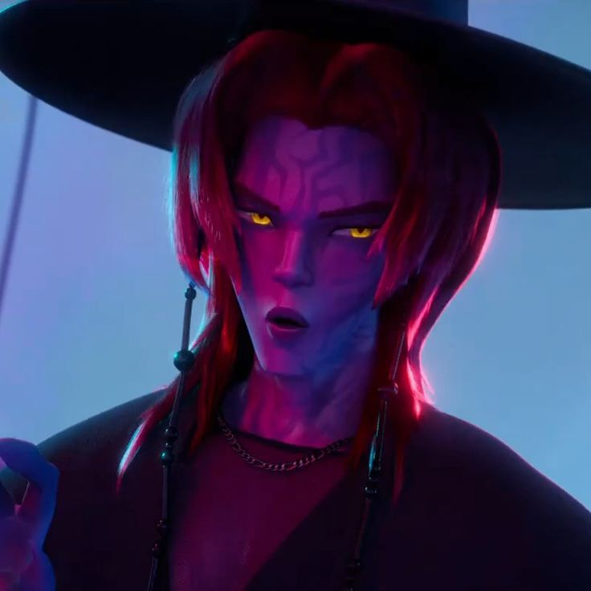

Romance is a member of Saja Boys and one of Gwi-Ma's demonic servants. Together with the other members, he works to attract fans, collect souls, and weaken the Honmoon through the group's growing popularity.
Romance is known for his charming and romantic stage persona. His signature hairstyle forms a heart-shaped fringe, and he frequently creates finger hearts and blows kisses to fans during performances. His image is carefully designed to make him appear approachable, affectionate, and irresistible.
Although he often appears playful and romantic, Romance is still a demon serving Gwi-Ma's ambitions. Behind his charming smile lies the same dangerous purpose shared by the rest of Saja Boys.